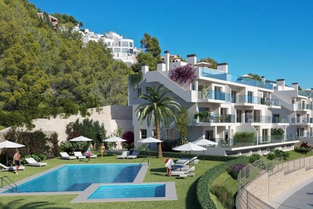
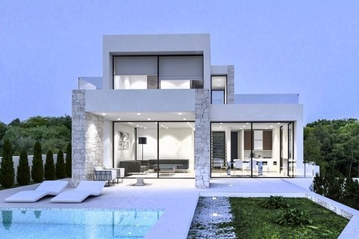
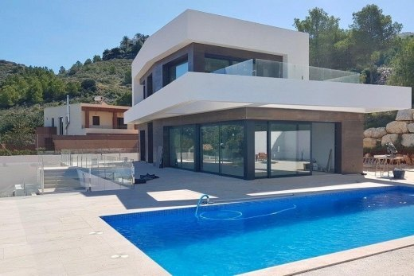

Nos Maisons
Niger

voulez-vous louer ou être propriétaire de l'une des plus belle maison du Niger?
Niamey, Zinder, Maradi, Tillaberry, Dosso, Agadez, Diffa, et Tahoua ...
Bienvenue à Holidaydream Homes , je suis Moctar Yonli , dans mon agence immobilière vous trouverez des biens
immobiliers à vendre dans tout le Niger , la construction de villas sur mesure, la vente de maisons au design moderne de nouvelle construction
du 21ème siècle directement du constructeur et à vendre des terrains à bâtir, appartements, maisons mitoyennes, penthouses et villas .
J ai eu la chance d'être nés et de vivre ici, je connais les régions en détail et grâce à notre moteur de recherche immobilière, nous vous
proposons un service gratuit de recherche de maison en collaboration directe avec les autres agences immobilières du pays, offrant tous les biens
immobiliers pour la vente sur le marché dans un seul point de vente.
Le soleil, la mer Méditerranée, les plages, les gens sympathiques, la gastronomie et la sécurité
Sérieux, bon travail, transparence et confidentialité absolue
Maisons à vivre le style de vie méditerranéen
- Nouvelle constructionVilla moderne de nouvelle construction
- Nouvelle constructionAppartement modern
- Nouvelle constructionVilla de nouvelle construction
- Nouvelle constructionVilla moderne de nouvelle construction
- Nouvelle constructionVilla de nouvelle construction avec vue sur la mer
- Nouvelle constructionVilla moderne de nouvelle construction
- Nouvelle constructionMaison mitoyenne de nouvelle construction
- Nouvelle constructionAppartement de nouvelle construction
- Nouvelle constructionVilla moderne de nouvelle construction
- Nouvelle constructionVilla de nouvelle construction à vendre
- Nouvelle constructionVilla moderne de nouvelle construction
- Nouvelle constructionVilla de nouvelle construction avec vue sur la mer
Grâce à notre expérience du marché immobilier du Niger, dans notre agence immobilière Holidaydream Homes
en collaboration avec notre équipe de constructeurs, architectes et collaborateurs, nous respectons les critères les plus stricts.
Nous sélectionnons chaque jour avec soin les meilleurs sélection de propriétés du Niger pour investissement, achat et vente.
Nous garantissons une diversité maximale dans notre offre de propriétés de luxe sur tout l ensemble du Niger avec vue sur la mer, à proximité de la plage et des terrains de golf.
Des millions de touristes à la recherche du style de vie méditerranéen, le Niger a toutes les exigences
pour passer de longues saisons ou vivre en profitant de la vie lente.
Le marché immobilier du Niger est en constante évolution. Grâce à Internet, nos habitudes de consommation et notre travail ont changé.
Au cours de la nouvelle ère technologique, nos relations avec le client sont personnalisées et exclusives, sans perdre de côté le côté humain.